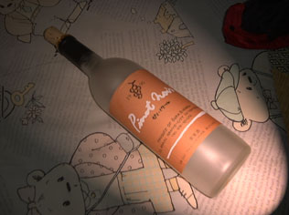
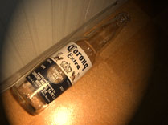
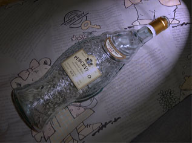
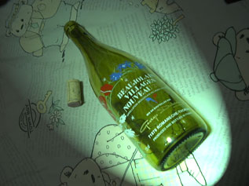
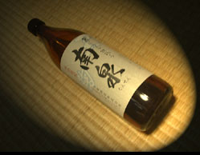
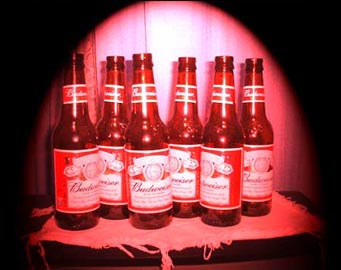

お酒の瓶で気に入ったのがあると捨てるのが忍びない。そこで写真にとっておこう、ということであまり意味もなく、お酒の思い出とともに
ここに載せます。それにしてもお酒の味はその時の気分で
ずいぶん違いますね。
|

「ピノ・ノワール(Pinot
Noir)」
免許合宿で山形の米沢にいったときのお土産に買ったワイン。味見させてもらいながら選んだものなので、味はむちゃくちゃ自分好み。想像を超えてフルーティな、かなり甘口ワイン。見た目はロゼっぽいです。
|
| 
「コロナビール(Corona)」
好きなビールのひとつ。
とてもさわやかな飲み物で飲みやすくビールが苦手なひとにもおすすめ。
切ったレモンを瓶にいれてしまってから飲むのがかなりおいしい。
|
| 
「PESCEVINO」
読み方知らなかったりします。
この魚型の瓶は、いとおしくてなかなか捨てられません。
|
| 
「ボジョレー・ヴィラージュ・ヌーヴォー(BEAUJOLAIS VILLAGES NOUVEAU)」
ニュースで解禁になったと大騒ぎしていたのでつい買ってしまいました。
アオカビのチーズといっしょに食べました。
|
| 
「南泉」
種子島名物の南泉(ナンセン)という芋焼酎。
芋の味がします。これはロックで芋の味を楽しみながら飲むのが好き。
|
| 
「Budweiser」
茨城で働き始めた頃に飲んだビール。
|